착석 시 스캔 절차가 시작됩니다.
장내자산 스캔
변기에 앉는 순간, 장내 데이터가 정제되어 사회적 자산으로 평가됩니다.
디버그: 시퀀스 시작

올바른 자세로 앉아 주세요.
등을 곧게 펴세요.
발을 바닥에 붙이고 엉덩이에 힘을 주세요.
몸을 흔들지 말고 호흡을 고르게 유지하세요.
잠시 동안 이 자세를 유지하면 스캔이 자동으로 시작됩니다.
PIR:
OFF
Pressure:
OFF
System:
IDLE
Phase:
A0-1
Timer:
00:00
대기 중입니다.
관람객 접근 전, 시스템은 장내자산 스캔을 준비하고 있습니다.
변기 근처에 다가오면 시스템이 자동으로 깨어납니다.
접근 감지(PIR ON)
PIR OFF
압력센서 ON(착석)
압력센서 OFF(이탈)
강제 리셋
스캔 대기
00:00 / 00:30
정제율
0%
남은 시간: -
NO · 상장하지 않기
YES · 사회 자산으로 상장
A0-1: Standby → PIR ON(A0-2) → 압력 ON(A1) → B(스캔) → C(결과) → YES/NO 상장.